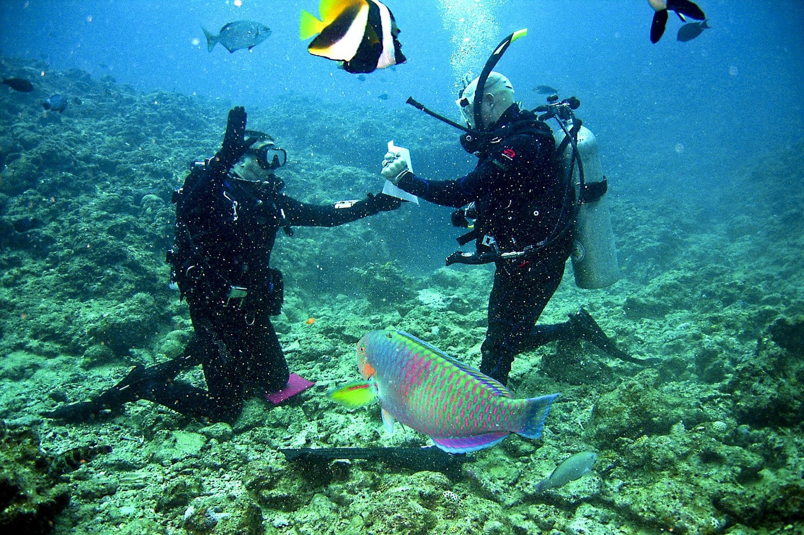
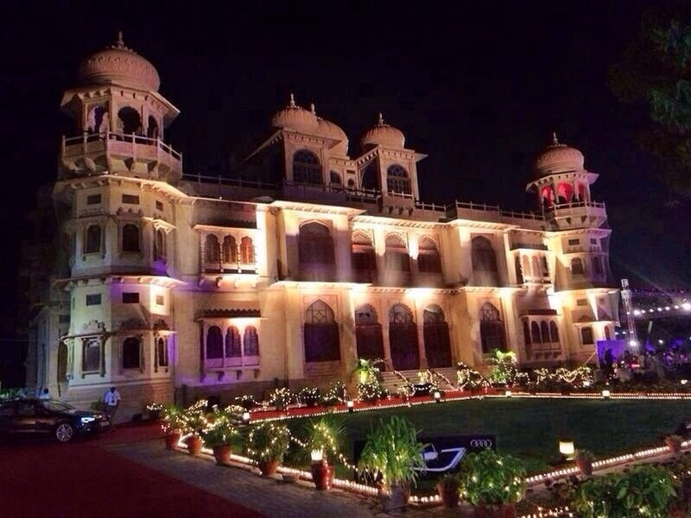
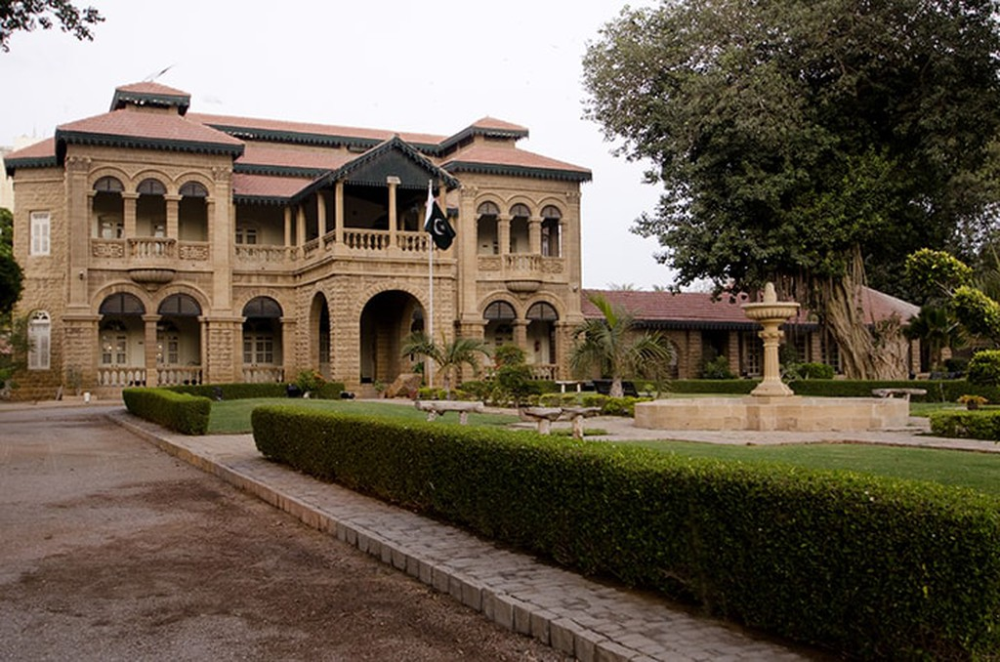
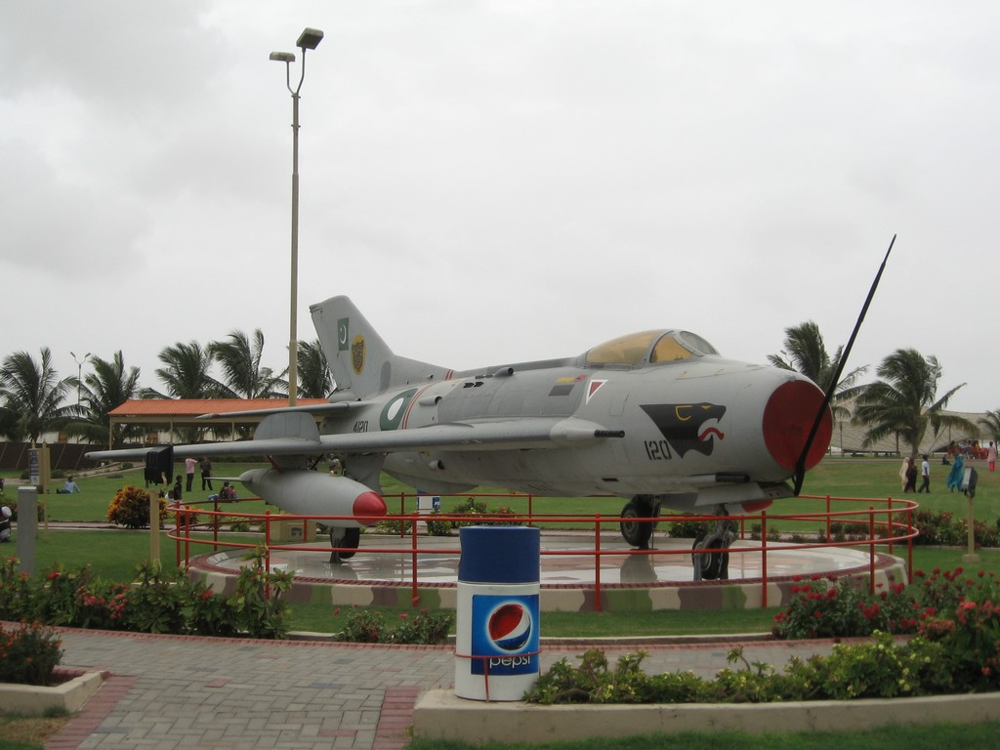
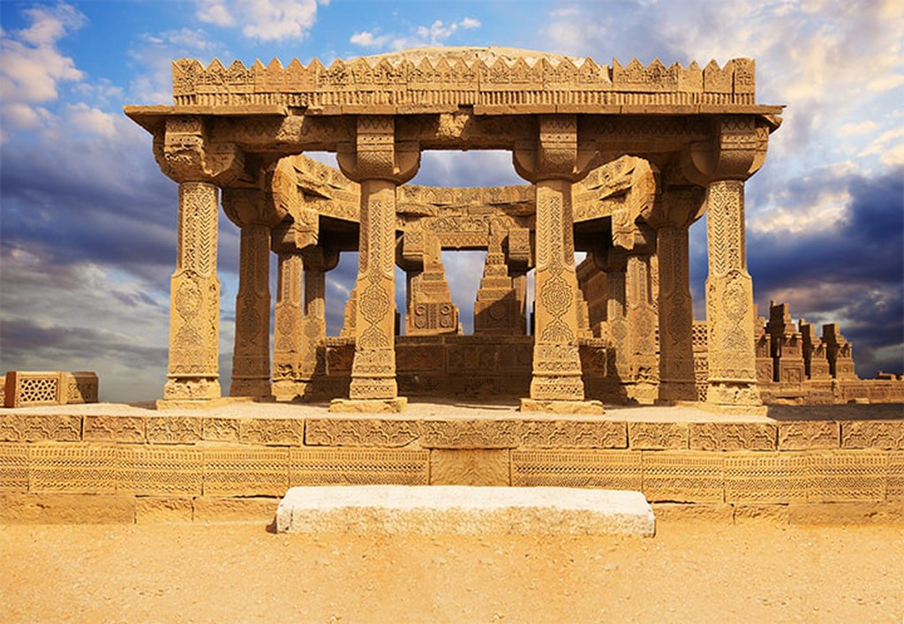
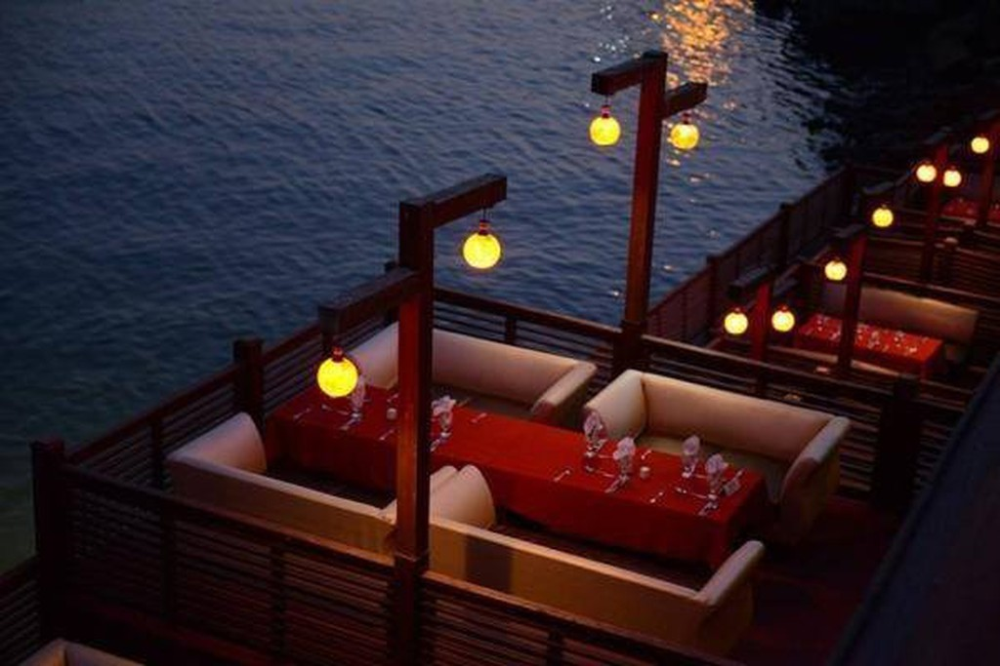
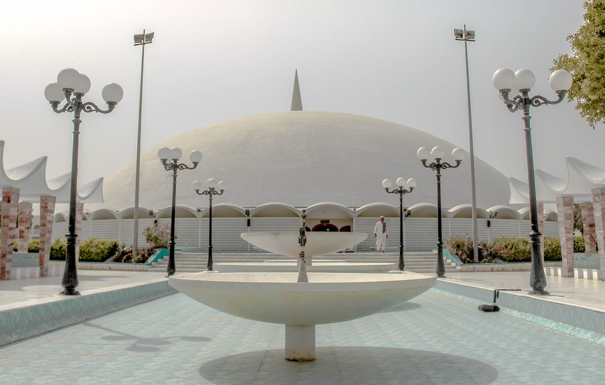

Karachi, which was once the prehistoric humble abode of Sindhi fishermen, is now a roaring urban economy that sustains the country with its large seaports.
Always up and running, the streets of Karachi are a cacophony of colourful buses.
Churna Island and its water sports

Churna Island, which is only a two-hour drive away from central Karachi, is a must-visit. Here is where you can swim, snorkel and scuba dive around the island’s reef and gaze at a multitude of sea creatures, from fish to snakes and turtles that inhabit its warm waters.
Mohatta Palace

Art, architecture and culture come to play at this 20th-century palace built by a Hindu Prince in 1925.
Used today as an art gallery and museum, there are always thought-provoking exhibitions happening at this grand building surrounded by trees and Renaissance-style statues.
The Rajasthani-style design of this structure is a sight to behold
Quaid-e-Azam House Museum

Being the founder of the nation, Quaid-e-Azam’s personal history and life wholly meshed with the history of the country itself.
Visit this museum to embark on that quest or to admire the colonial building and the peaceful gardens around it.
PAF Museum

If you like aircrafts and all things aeronautic, then the Pakistan Air Force Museum is a must-visit.
It is home to many aircrafts, like planes and jets and radars and weaponry that have been used by the Pakistan Air Force throughout the years, especially during the 1965 war with India. Nearby, there are World War 1 and 2 scale models and some modern planes on the display as well.
There are also food options in the main park and many places to relax in the gardens.
The Chaukhandi Tombs

History buffs will go gaga upon visiting this ancient graveyard and UNESCO World Heritage Site that houses tombs of the ancestors of a local tribe.
The intricate make of these graves is its most attention-grabbing feature with carvings and designs typical of its region, Sindh.
The origins of this necropolis are estimated to range between the 15th and 18th century
Do-Darya

Do Darya is a local food lover’s paradise, built right along the seashore.
There are numerous restaurants and cafes here to choose from, serving all types of fare.
Post Guard
Set on 130 acres of land, this park is the largest in the city and is visited by over 10 million people each year.
There is also a turtle pond and a rose garden found within its gates
Post Guard

Also known locally as Gol, or round mosque, due to its large domed roof,
Tooba Mosque is one of the city’s major attraction.
The white marble dome is 236 feet in diameter and is balanced on
a low surrounding wall with no centre pillars to support it.
The mosque can hold a congregation of up to 5,000 people.